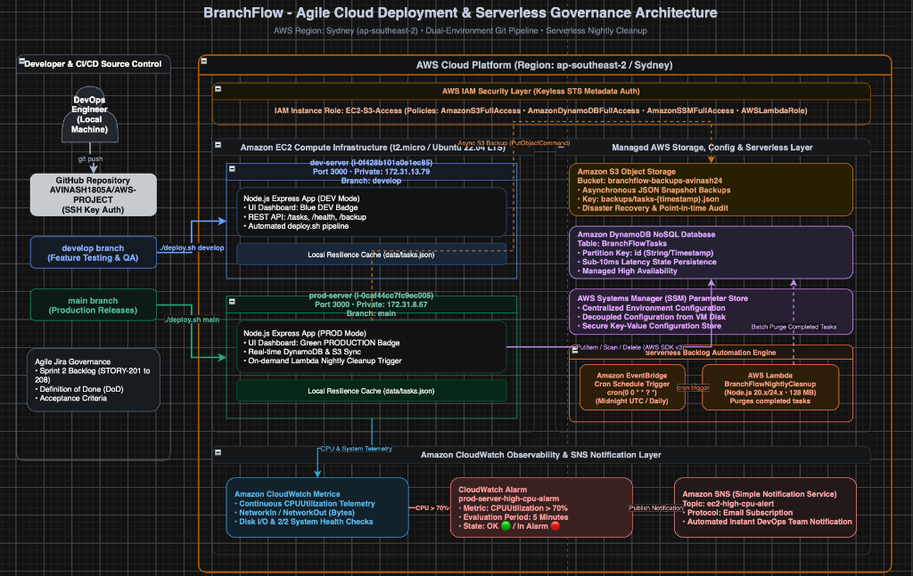
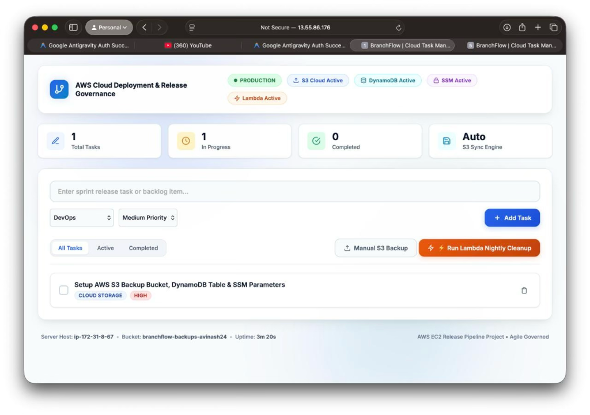
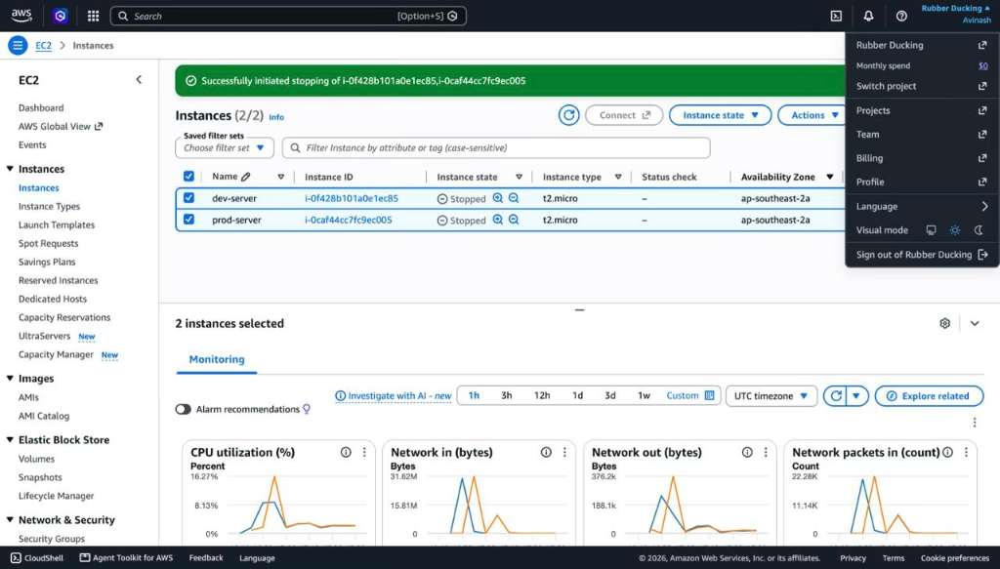
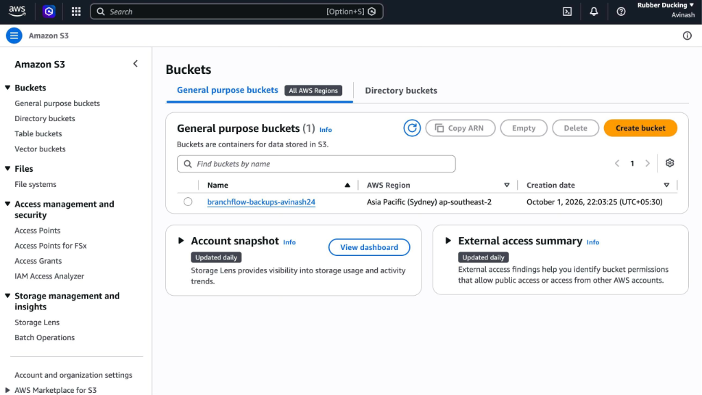
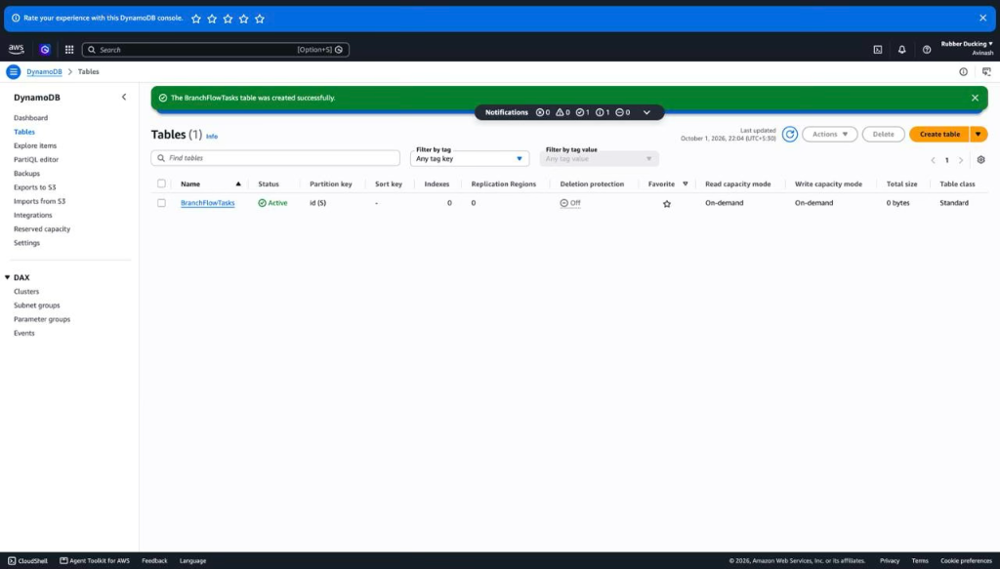
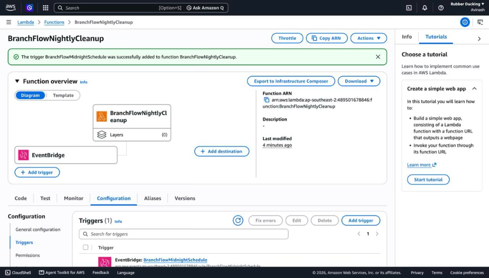

deploy.sh), sub-50ms serverless maintenance overhead, and seamless fault tolerance under network partition conditions.
The rapid adoption of Agile and Scrum methodologies has accelerated the cadence of software releases. However, bridging the gap between local software engineering and resilient cloud infrastructure remains a primary challenge in modern software engineering [1]. Manual server configuration, unversioned deployments, static credential exposure in code repositories, and tightly coupled database monoliths introduce severe availability risks and security vulnerabilities into production environments [2].
To address these challenges, this paper presents BranchFlow, an enterprise-grade cloud web application and release pipeline engineered entirely on Amazon Web Services (AWS). The core objectives of this engineering implementation include: (1) Environment isolation between development and production virtual machines in the Sydney (ap-southeast-2) region; (2) Automated zero-downtime deployment through shell scripting (deploy.sh); (3) Decoupled dual-tier persistence integrating Amazon DynamoDB with Amazon S3; (4) Keyless security via IAM instance profiles; (5) Serverless automated maintenance via AWS Lambda and EventBridge; and (6) Proactive observability via Amazon CloudWatch and Amazon SNS.
The BranchFlow architecture is structured into six decoupled operational tiers: Source Control & Agile Governance, Identity & Access Governance, Compute Infrastructure, Dual Cloud Persistence, Serverless Backlog Maintenance, and Observability & Telemetry.

The software repository enforces a structured Git branching strategy: The develop branch serves as the integration branch for ongoing sprint deliverables where all feature testing occurs. The main branch represents the production release branch, accepting merges exclusively from verified sprint candidates that fulfill the Definition of Done (DoD).
Two independent virtual machines are provisioned on Amazon EC2 within the Sydney (ap-southeast-2a) Availability Zone:
(1) Development Instance (dev-server): Instance ID i-0f428b101a0e1ec85, Private IP 172.31.13.79, dedicated to the develop Git branch;
(2) Production Instance (prod-server): Instance ID i-0caf44cc7fc9ec005, Private IP 172.31.8.67, dedicated to the main Git branch.
Both run Ubuntu 22.04 LTS on a t2.micro hardware profile (1 vCPU, 1 GB RAM, EBS volume) powered by Node.js 20 and Express.js.
In strict adherence to AWS Cloud Security Best Practices [3], static AWS Access Keys are prohibited across all codebase files. Both EC2 instances assume the IAM Role EC2-S3-Access via an IAM Instance Profile. The AWS SDK v3 retrieves temporary credentials automatically through the EC2 Instance Metadata Service (IMDSv2).
Deployments are codified into an executable shell script located at /home/ubuntu/AWS-PROJECT/deploy.sh:
#!/bin/bash
set -e
BRANCH=${1:-main}
APP_DIR="/home/ubuntu/AWS-PROJECT"
LOG_FILE="/home/ubuntu/AWS-PROJECT/deploy.log"
echo "=== [$(date '+%Y-%m-%d %H:%M:%S')] Starting Deployment: $BRANCH ===" >> "$LOG_FILE"
cd "$APP_DIR"
git fetch origin "$BRANCH"
git reset --hard "origin/$BRANCH"
npm install --production
pkill -f 'node server.js' || true
nohup node server.js > app.log 2>&1 &
echo "=== [$(date '+%Y-%m-%d %H:%M:%S')] Deployment Successful on Port 3000 ===" >> "$LOG_FILE"
The persistence layer utilizes two complementary cloud storage services: (1) Amazon DynamoDB provides managed NoSQL persistence via the BranchFlowTasks table partitioned by id (S) with On-Demand capacity; (2) Amazon S3 bucket branchflow-backups-avinash24 captures immutable timestamped JSON snapshots under backups/tasks-{timestamp}.json for point-in-time audit and disaster recovery.
The Express backend communicates with AWS Systems Manager (SSM) Parameter Store using @aws-sdk/client-ssm, decoupling application runtime parameters from local disk configurations.
The serverless function BranchFlowNightlyCleanup (Node.js 20.x, 128 MB) scans DynamoDB and purges completed tasks. It is scheduled via Amazon EventBridge rule BranchFlowMidnightSchedule:
which executes nightly at 00:00 UTC (10:00 AM Sydney). An on-demand trigger endpoint (POST /lambda/cleanup) is integrated into the web client for live verification.
The custom CloudWatch Alarm prod-server-high-cpu-alarm tracks production CPU utilization:
Breaching this threshold transitions the alarm to ALARM state and publishes an alert to Amazon SNS topic ec2-high-cpu-alert, dispatching an immediate notification email to the engineering team.
All project deliverables were managed and executed under Scrum governance in Sprint 2. Table I details the user story mapping and verification criteria.
| Story ID | User Story Title & Description | Priority | Points | Status | Verification Outcome |
|---|---|---|---|---|---|
| STORY-201 | AWS S3 Cloud Backup: Automatically archive task changes to S3. | High | 5 | Done | Timestamped JSON object created under backups/tasks-*.json. |
| STORY-202 | Automated Release Pipeline: Zero-downtime EC2 deployment script. | High | 3 | Done | ./deploy.sh updates daemon process on port 3000 reliably. |
| STORY-203 | CloudWatch & SNS Proactive Alerts: Monitor CPU > 70% with email alert. | High | 5 | Done | CloudWatch Alarm triggers SNS email notification upon breach. |
| STORY-204 | Environment Diagnostics & Badging: DEV vs PROD indicators in UI. | Medium | 2 | Done | Header dynamically renders blue DEV vs green PRODUCTION badge. |
| STORY-205 | Keyless IAM Security: Attach IAM Role EC2-S3-Access to instances. | High | 3 | Done | Zero static credentials in code; STS metadata authentication verified. |
| STORY-206 | AWS DynamoDB Real-Time Sync: Store tasks in managed NoSQL table. | High | 5 | Done | Real-time CRUD operations reflected in BranchFlowTasks table. |
| STORY-207 | AWS SSM Parameter Store: Centralize configuration management. | Medium | 3 | Done | Runtime parameters resolved from SSM without local file coupling. |
| STORY-208 | AWS Lambda & EventBridge: Serverless nightly backlog purge. | High | 5 | Done | Completed tasks purged nightly and via on-demand UI telemetry modal. |
The deployed application was empirically evaluated in the AWS Sydney region across functional and infrastructure criteria.





Local Resilience Cache: If internet connectivity to AWS endpoints degrades, backend calls are encapsulated in resilient try-catch handlers that fall back to local file persistence (data/tasks.json), preventing process crashes.
Cost & Security Optimization: The entire architecture operates strictly within the AWS Free Tier (EC2 t2.micro, DynamoDB On-Demand, Lambda 1M invocations/month). Keyless IAM authentication completely eliminates credential theft risks.
This paper presented the architecture, deployment, and evaluation of BranchFlow, demonstrating an Agile-governed cloud release pipeline across Amazon EC2, S3, DynamoDB, SSM, Lambda, EventBridge, CloudWatch, and SNS. Future work will incorporate an AWS Application Load Balancer (ALB), an Auto Scaling Group (ASG), and an automated AWS CodePipeline triggered via GitHub webhooks.